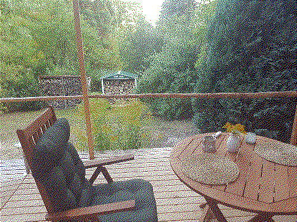
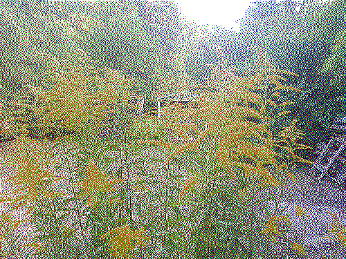
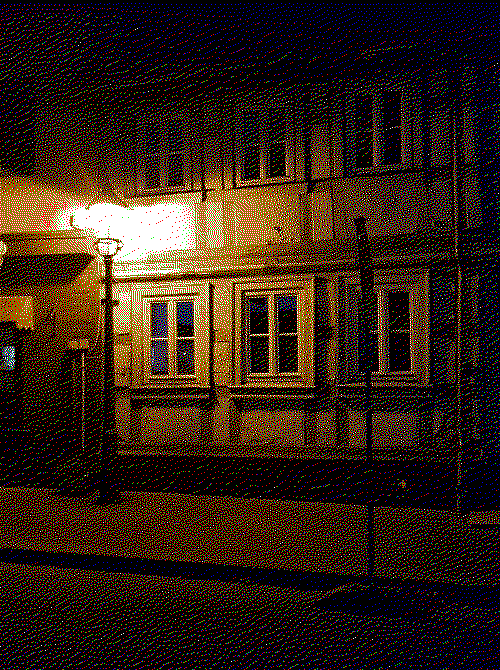
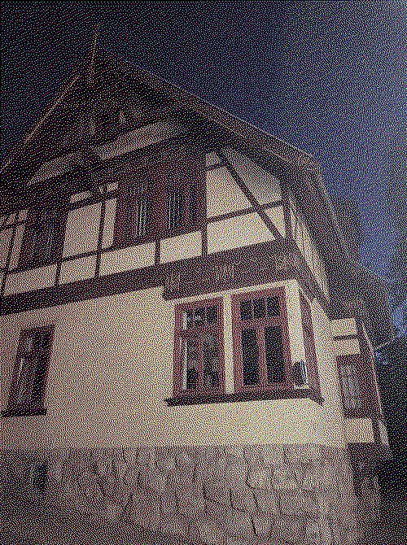
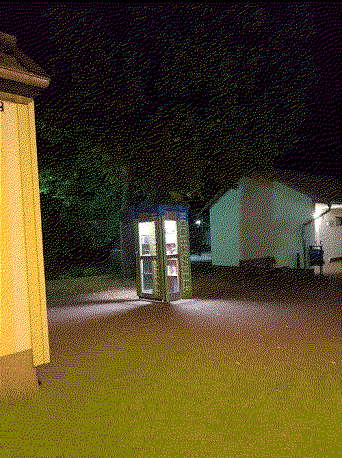

I had this thought, being now on vacations in the centre Germany that here it makes sense to learn trees, birds, flowers and mushrooms. Because there are plenty, they are indeed a part of the village. Animals are casually going around the rented house.
Being a city girl that I am I get spooked by the noises of birds and animals being so close. When my wife and I were watching a tv series Wayward Pines we heard noises. We were totally sure that one of the small fellows got into our living room. Long story short it didn’t, it must have been on a porch, but we have called the owner to help us check the property. 🙃




